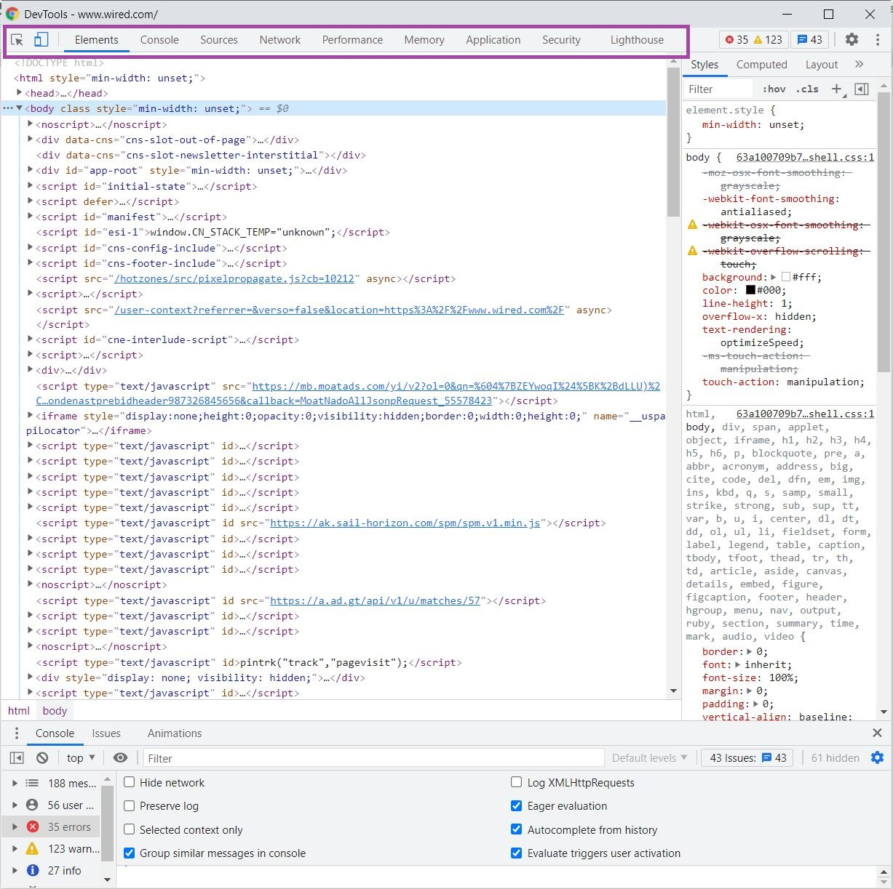

JavaScript Fundamentals
17 Sept 2021 | 10 mins read | Tech
Before diving right into JavaScript, allow me to give you a little background about its distant cousins, HTML and CSS. These two are equal partners when it comes to building up what we see on our browsers. While each of them play an important part, they also take on different roles. Essentially, HTML defines the structure of a website and holds the content that we see. On the other hand, CSS provides the appearance and styling of said content. In simpler terms, think of HTML as the boring toilet paper -- plain, white, yet useful. Now adding CSS, our good old dependable friend would then look like this!
Or perhaps you fancy this?
Fascinating, right? CSS makes HTML look cool. Using HTML’s tags and using them as selectors, CSS is able to target elements so it can provide the much-needed styling. However, despite this, together they still provide limited interactivity. Users merely sit back and observe passively, and at most, they get simple interactions.
To fill this important gap, we have JavaScript. It deals with interactivity and so much more. Think playing media, remembering where you left off, being able to do things with mouse clicks and keyboard taps, having fancy menus with animations, interacting with webcams and microphones, sourcing information from users. In short, JavaScript is the eye candy that attracts customers and gives them better experience, sometimes even at the expense of good, useful content.
But how is all this made possible? How can JavaScript make changes to HTML and CSS?
The DOM
Well, the real hero behind the scenes is the Document Object Model> (or simply, the DOM), the data representation of the objects that make up the structure and content of a document on the web. It makes it possible for all the 3 players -- HTML, CSS, and JavaScript -- to work together and produce what you see on your browser. The DOM has a tree-like structure that helps the browser to make sense of what is going on. Through this object representation, it is possible to access and modify HTML elements using JavaScript.

Here is an analogy:
Think of the DOM as like a subdivision development. As an entity, it works in the background coordinating and facilitating. But what home buyers can actually see is the actual subdivision it builds -- what you see on the browser. Inside this subdivision is HTML, the several houses comprising it, each having the basic structures of a good home. However, they are kind of boring because they look very basic: doors, windows, roof, walls, bedrooms, garage, bathrooms. Pretty dull, you can imagine.
So here now comes CSS to help make HTML look more interesting. CSS then paints and decorates the houses, adds photos on the walls, puts fences around them, and makes the subdivision more beautiful with gardens and flowers. But something really important is still missing for this subdivision to be a perfect place to live in, and that is JavaScript.
JavaScript is the body corporate involved in coordinating the affairs of lot owners, such as conducting meetings, collecting association dues, keeping financial accounts, etc. This can include something as simple as traffic management, automation of security cams, maintenance of common areas, or gathering information from homeowners. It can also add, remove, move, or modify these aspects of HTML, as well as the changes that CSS has done. JavaScript listens and reacts to the needs of its homeowners.
How to Interact with the DOM
One way to interact with the DOM is through JavaScript. For instance, we can use .getElementById or .getElementsByClassName to access elements and attributes whose ID or class is set. Also, we can use .innerHTML to access the content of an element.
Another way to interact with the DOM is by manipulating it using the Chrome Developer Tools. You can play around certain changes and see how they would appear on your browser.

Now What Are Control Flow And Loops?
The computer follows a certain order when performing script statements. Normally, codes are run from the first to the last line of a file -- top to bottom. For example, I watch the evening news before I have dinner. Then after dinner, I clean up the table and watch a movie. This is my normal flow.
However, the computer may run into something that changes this order. The same thing that I might not follow the exact order in my routine when certain things happen. In computing, this is when the computer encounters control flow statements, and one example of it is looping.
Loops perform repeated tasks based on a condition. Whether it is true or false, it will continue to run until the defined condition is met. The most common types are:
- for loop> - repeats until a specified condition evaluates to false. As long as the conditional statement evaluates to true, the loop will continue.
- while loop - runs while a specified condition is true and stops once that condition is no longer true
- do while loop - passes the code once inside the loop no matter what and continue to run it while the specified condition evaluates to true
What’s the difference between accessing data from arrays and objects?
Object Properties
Accessing object properties can be done using 2 ways:
dot notation - used when you know ahead of time the name of the property you are trying to access
bracket notation - used when the property of the object you are trying to access has a space in its name (must be in quotes, single or double), and the same can also be used for object properties without spaces
Array Data
On the other hand, data inside arrays can be accessed using zero-based indexing. Similar to objects in that they are written in bracket notations, but different in that it specifies the index in the array, as opposed to specifying the property of an object.
This would log 18, the second entry in the array. It's because in zero-based indexing, the first item in the array has an index of 0.
What are functions and why are they useful?
A function refers to the self-contained part/s of a code that is set to do specific tasks. It can take in data, processes it, and then returns a result.
4 parts of a function:
- The function keyword.
- An optional name.
- A list of parameters names enclosed in parentheses.
- The statement enclosed in braces.
Functions are useful in reducing something complicated into smaller and more manageable parts, thus reducing its overall complexity. It is often used for doing repetitive tasks, as well as to improve the readability and reusability of the code. For instance, instead of writing the same code over and over again, it is simplified, and therefore makes debugging and tracing errors easier.